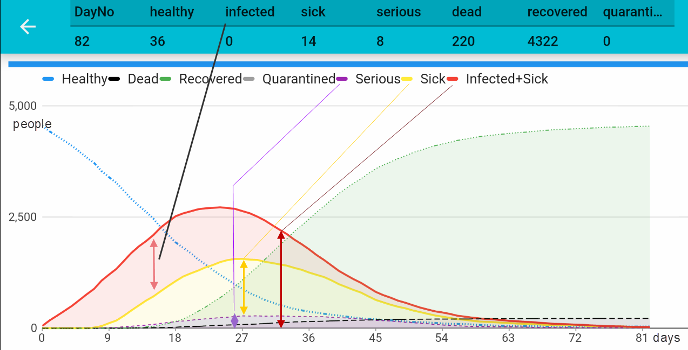

The first run
After the first run you'll get a chart like shown below. With the default parameters you will see that almost all people will get infected and round about 4% to 5% will die.

The default setup simulates the situation when people simply ignore that Corona virus is serious (no preventive measures have been taken). So we let people move/behave as normal. Almost all people will get the infection and all this will happen very fast. Note: This was the initial approach in Great Britain and in the Netherlands. Both have stopped it. Interesting to see how this compares to our second example, later.
Changes in the latest version
Lately, I heard about the 60% to 70% rate of infection: "Coronavirus: 60% of UK population need to become infected so country can build 'herd immunity', government's chief scientist says" (ref. Independent). This phenomenon is called "herd immunity", but the numbers when this will happen differ.
I have implemented to 60% to 70% of the population has got the infect:

The diagrams shows this herd immunity effect with a lighter red line when 60% of the population is sick together with a solid blue line. After the 70% limit has been reached, the chart will become again a bit lighter to illustrate the worst lies behind.
The chart explained
y-axis: Number of people
x-axis: Day No.
It is important to notice, the Days are not real days! In fact, it is more the number of simulation turns until the break-out will reach its end. Take this number to compare charts with other simulation runs to see how your changes may impact the duration of the break-out at all. (In example 2 we will restrict people's movements and you will see, the duration of the break-out changing significantly).
Lines
| Line Color | Meaning |
|---|---|
| Blue | Healthy people, not yet infected. At the end of the simulation see the healthy=36 in the headline. This means, after 82 days out of a population of 4600 only 36 people did not get the infection. |
| Yellow | People who are sick and may infect others |
| Red Line | Total amount of people who are sick or infected only (no break-out yet). |
| Red Area | The red area above the yellow line shows the number of infected people, which is the serious quantity! Those people move around and infect others without knowing they're infected. |
| Purple | People who are seriously sick and need professional assistance. This is obviously a serious number because it directly relates the capacity of the health system. |
| Green | People who got infected but have recovered from Corona. Assumption is that if someone gets infected he won't get it again (that's how the simulation is designed!). |
| Black | People who died because of Corona infection. |